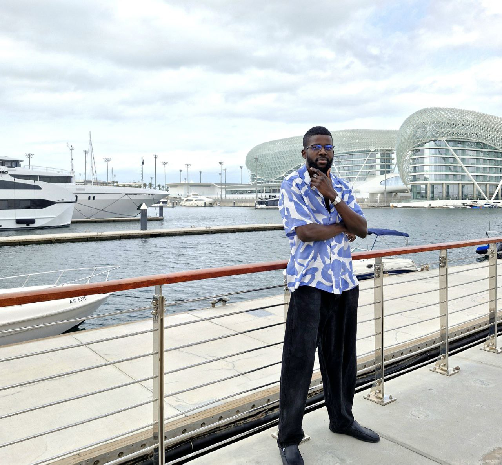
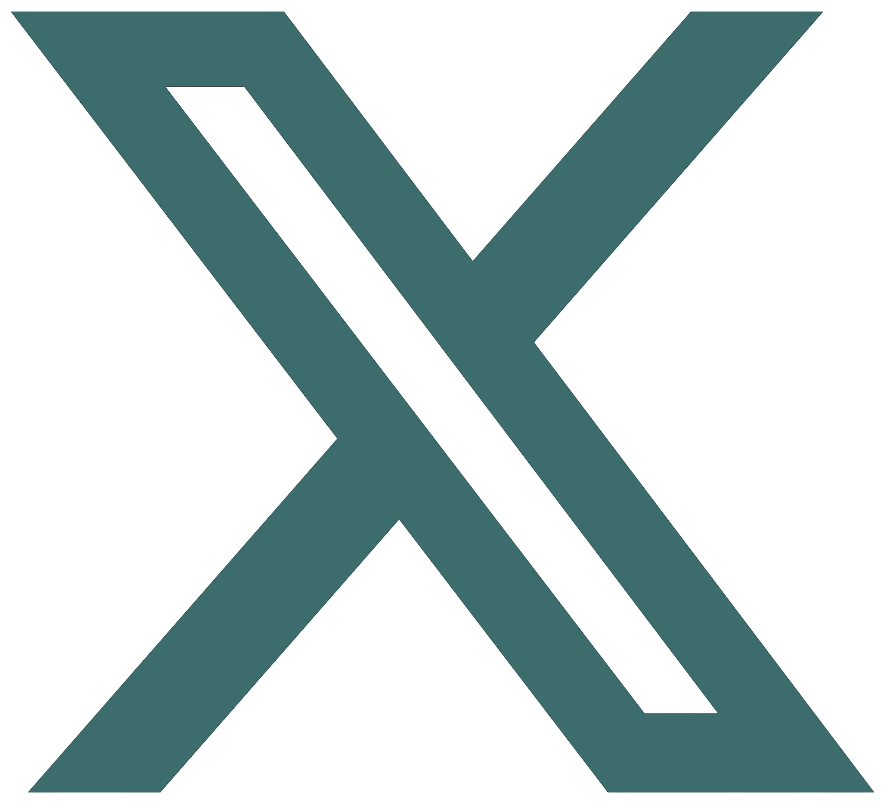

Sam • Munachiso Samuel Nwadike (MSc, BSc@NYU) 
Google Scholar[] •
Twitter[
Research Engineer (II) @ MBZUAI
Awards
Click To Read A Paper
About
I earned my bachelors at New York University (Abu Dhabi & New York). I am now a researcher at a highly-ranked AI institute [1], with Dr. Kentaro Inui's Mechanistic Interpretability [2] (MINT) team.
Actively interested in new opportunities, horizons, and collaborations?
Let's communicate over email! (msn307 at nyu.edu)
Here is my reflection from 2019 on why small, "cracked" (talented) teams outperform expectations so consistently" [3]